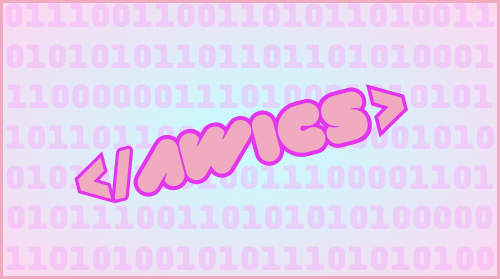

Qualifications
How I Give Back
Aggie Women in Computer Science
(Check out AWiCS)
I am part of the organization Aggie Women in Computer Science! We are an organization that stands for empowering women in the field of Computer Science and Engineering. We also strive to fuel to the passion and desire to explore the ever-evolving field of computing for any person regardless of their skill level.
Spanish Tutoring

I partake in tutoring Spanish to people at any skill level (beginner to intermediate). As a native Spanish speaker, I am in a privileged position where I can help others in their language learning journey. Being able to teach Spanish as both the proper language and in a conversational manner is very important to me and I am glad to be able to contribute that knowledge to my community.